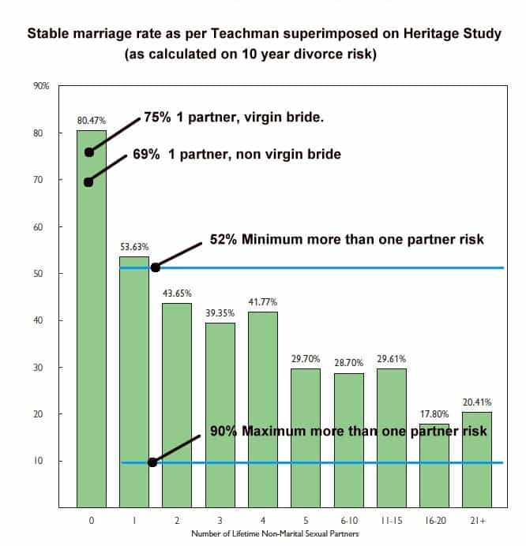

< < < Back
The 7 Most Common Lies Women Tell In A Relationship – Return Of Kings
Many of you might have heard about a book I wrote called The Key Logger. To write the book, I used a key logger to record all the things typed by girls on my computer while I was dating them. I have had a key logger on my computer for a very long time, and it allowed me to do something that most men couldn’t: know when women lied to me.
These seven lies were the most common ones that women told me over the many years I have used a key logger. I will link to various articles and studies to help you understand why so many women will lie right to your face, and why it is so fucked up.
7. Age
Most of the girls I date are within the 18-22 year old group. However, I noticed something from the small number occupying the 24-and-up group: they frequently lied about their age. Maybe it was only a couple of years, but they would lie. Normally, I wouldn’t include such a small sample size on this list, but because such a high percentage tried to shave off a few years, I had to add it.
Girls lie about age for the obvious reason: men are attracted to younger women. Check out this article about at what age men and women find each other most attractive.
Even with all the BS that the media is telling women (“40 is the new 30,” etc.), women still instinctively know when men find them the most attractive and when they are above that age, they will sometimes try to hop in a time machine. Unfortunately, it doesn’t work.
6. Being Single
Another thing many women will lie about is whether they are single. There is the obvious one where they will pretend they have a boyfriend when a guy they aren’t attracted to asks them out, but we will focus on the opposite situation. When a girl really likes a guy she ends up meeting, many taken girls will lie about not having a boyfriend. At the very least they will never mention it, which is the same as lying about it.
There were quite a few girls that were in committed relationships before they met me. I don’t usually ask a girl if she is single; I just assume she is from the fact that she lets me kiss her and touch her in a more than friendly way. These girls would never mention their boyfriends and I would never know about them until getting a strange phone call, message on Facebook, or key logging them and seeing that they were tying to juggle two (or more) guys.
Sometimes the girls would try to go on dating both myself and another guy. Other times they would dump the guy after it seemed like the two of us were developing a consistent pattern of seeing each other. Then, there were the girls that would cheat on their boyfriends of many years for the passion and excitement of being with another man.
You know what’s scary about this? That man they cheat with could end up knocking them up. Take a look at this study about how honest they are with their boyfriends in situations like these.
50% of women ADMIT that they would lie to their boyfriend saying it’s his kid, and 42% of women would lie about taking birth control so they could get pregnant. Talk about the ultimate “fuck you” to your boyfriend.
5. We are just friends, he’s not interested
Another common lie women will tell you when they say they are committed to you is “We are just friends, he’s not interested in me.” I used to think that women actually believed this and were just too naive to notice. That was until I saw for myself the obvious way that these guys acted towards them: “I miss you,” “You look so sexy in that picture,” etc.
From these messages it was clear that no woman could honestly believe that these guys were interested in just being friends. Then, there were the girls that would say the same things back. Why do women do this? There is a few reasons. They sometimes do it to get validation. Maybe it’s just boredom, or maybe she has other plans for him.
Women will have “backup plans” and “the ones that got away” that they will continue chatting and flirting with. They keep “backup plans” in case the relationship doesn’t work out or they have somebody to run to when there is a big fight in the relationship. She will keep “the one’s that got away” for the possibility that she can win him over. You may be getting dumped soon if she succeeds. Women will jump ship when they think they can land a guy of higher value.
This is scary because of how easily this can lead to her getting knocked up by another guy. Maybe “the one that got away” pumps and dumps her, or maybe a “backup plan” gets into her pants in the middle of one of your fights. Either way you could end up in the same situation as this guy.
This guy raised his kid, then found out that his wife had cheated on him with another man and that other man was the father of his little girl. After this, they ended up getting divorced. Go ahead, guess who had to keep paying child support. I’ll give you a hint, it’s not the real father. That’s right, it’s the guy that was duped into raising another man’s child.
To add insult to injury, his wife ended up getting back together with the biological father of the kid. So the guy ended up paying child support for a kid who lived with her biological father and mother. It’s very likely that this affair stemmed from the wife telling her husband “he’s just a friend.”
4. I don’t flirt with other guys
The next most common lie is one they may tell you a lot: “I don’t flirt with other guys.” This one is so common and so hard to catch her in, because of the loose definition of “flirting.”
Here’s my definition of flirting: talking to a normal guy in a way that could lead him to believe that you are sexually interested in him. Girls can read body language much better than men can, so they really do know when they are flirting and when a guy is only interested in something more. They do this for the same reasons as the lie above: backup, plans, boredom, etc.
3. I’ve never done this before
I think every experienced man out there has heard this countless times. After bringing a girl back to your place on a first date or after just meeting her in the club, she will say “I’ve never done this before.”
She’s saying that so you will believe that she is a good girl who would never go home with a guy she just met, but that you were just that one in a million who it ended up happening with. Of course, if she’s saying that, it’s not even close to the first time she has ever done something like that.
Girls will try to appear innocent so that they don’t lose the opportunity to have a relationship with you. Girls know that “You can’t turn a ho into a housewife” so they will try to create an illusion in the hopes that you will fall for it. Unfortunately, many men do fall for it, and things like the next study are what ends up happening.
The more sex partners a respondent had had between age 18 and the time of first marriage or cohabitation, the more likely he or she was to be unfaithful (1.01) Source.
Yeah, you get married and surprise, surprise… she cheats.
2. Last time she had sex
This is one of my favorite things to ask. I started asking it a long time ago and it’s still fun to ask because of the ridiculously high percentage of girls that lie about it. I don’t know why, but most girls like to say the last time they had sex was 6 months ago. For some reason, in their heads, it just sounds right. Too bad that at least eight times out of 10, it’s a straight-up lie.
As I have previously talked about, girls are very aware of the fact that men don’t want to date a slutty girl, the same way that women don’t want to date a guy with no job or who lives with his mom. They know this, so they pretend to be innocent and they use this innocence as a weapon:
This is an article I wrote a while back about a girl that ended up sleeping with all three past writers of Swooptheworld within a nine month period. It shows her hilarious responses when confronted with the fact that all three of us knew we had been with her. She still wanted to be seen as a good girl.
1. Number of Sexual Partners
The most common thing that a girl will lie to you about is her notch count. I would say more than 90% of girls lie to me about this. This was the first lie I noticed a pattern with so many years ago.
Girls want to be seen as innocent, but they want it to seem believable to you. Most of you have seen the movie “American Pie.” In that movie there is a scene that mentions this:
Jessica: If a guy tells you how many girls he’s hooked up with, it’s not even close to that. You take that number and divide it by three, then you get the real total. OK, so if Kevin is saying it’s been three girls it’s more like one or none.
Vicky: None?
Jessica: The rule of three. It’s an exact science. Consistent as gravity.
The rule of three works in this situation as well, just backwards. When a girl tells you she has been with three guys, nine guys is probably more accurate. If she tells you six, probably around 18. However, I have found that a lot of times it’s even more, maybe six or seven times the number she told you. Contrary to Jessica’s thoughts on the rule of three, it’s not an exact science, but using it is a good way to have an idea of how many guys she has been with.
It’s so strange that nobody ever talks about this because it’s an obvious lie, and one that could trick a guy into giving everything to a girl who has been riding the cock carousel all her life. Check out this study that shows how drastically the chances of getting a divorce goes up if after every new guy she sleeps with:

Source.
What these most common lies tell us
Yes, women have been lying to you all your life. There is one positive thing you can take from these lies: it means that she is interested in a relationship with you.
Unfortunately, that is the ONLY positive thing about all these lies. Just because they want something serious with us, it does not make it OK for them to con us into a relationship with them. They use the fact that we want an innocent girl, and have become masters at appearing more innocent than they really are. They want their prince without having to live like a princess… don’t be duped.
Read Next: 4 Lies Men Are Being Told About Women


{kind=link}